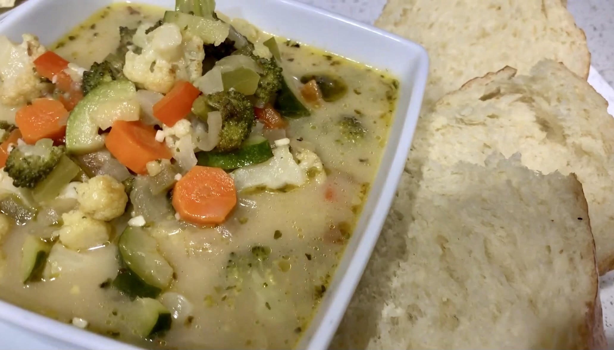

Savannah's Veggie Soup

Description
A delicious and brothy soup, composed of many different kinds of vegetables designed, crafted and cooked by my lovely wife, Savannah.
Ingredients
- 2-4 Carrots
- 2 Zucchini
- 2 Broccoli Florets
- 1 Large Cauliflower
- Olive Oil
- 1 White Onion
- 2 Celery Stalks
- 2 Bell Peppers (Green and Red)
- 1 Tablespoon of Garlic
- 1 Full Container of Chicken Broth
- 1 Cup of Vegetable Broth
- 4 Chicken Bouillon Cubes
- 1/2 - 1 Cup of Milk
- 1/2 Cup of Shredded Cheese
- 5 Tablespoons of Butter
- Salt
- Pepper
- Cumin
- Oregano
- Parsley
- Onion Powder
- Thyme
- Rosemary
- Basil
Steps
- Preheat oven to 425°F. Chop all vegetables that are being baked (broccoli, cauliflower, carrots, zucchini, etc.) and place them on a baking tray. Lather them in any oil of choosing. I like to use Avocado Oil or Olive Oil! Then put in oven until browned! (about 15 minutes)
- Chop the vegetables that will be sautéed. (Onion, bell pepper, celery)
- In a large pot, sauté onion with olive oil. Then add bell pepper and celery. Sauté for 5-7 minutes or until softened/onions are clear. Add garlic and sauté for 2 more minutes.
- Add in all baked vegetables and cook for 3 more minutes, mixing constantly.
- Add in chicken broth and vegetable broth until vegetables are covered and float off the bottom just a little bit! (I use one full container of chicken broth and 1 cup of vegetable broth) 1. Add in 4 chicken bouillon cubes, 1/2-1 cup of milk, 1/2 cup of cheese (any of your choosing), and about 5 tablespoons of butter.
- (Optional) take immersion blender and start to purée the vegetables, go until 95% of the vegetables are puréed. 1. Add in salt, pepper, cumin, thyme, basil, oregano, onion powder, parsley, and rosemary. 2. Boil for 10 more minutes.
- Voila! All done!